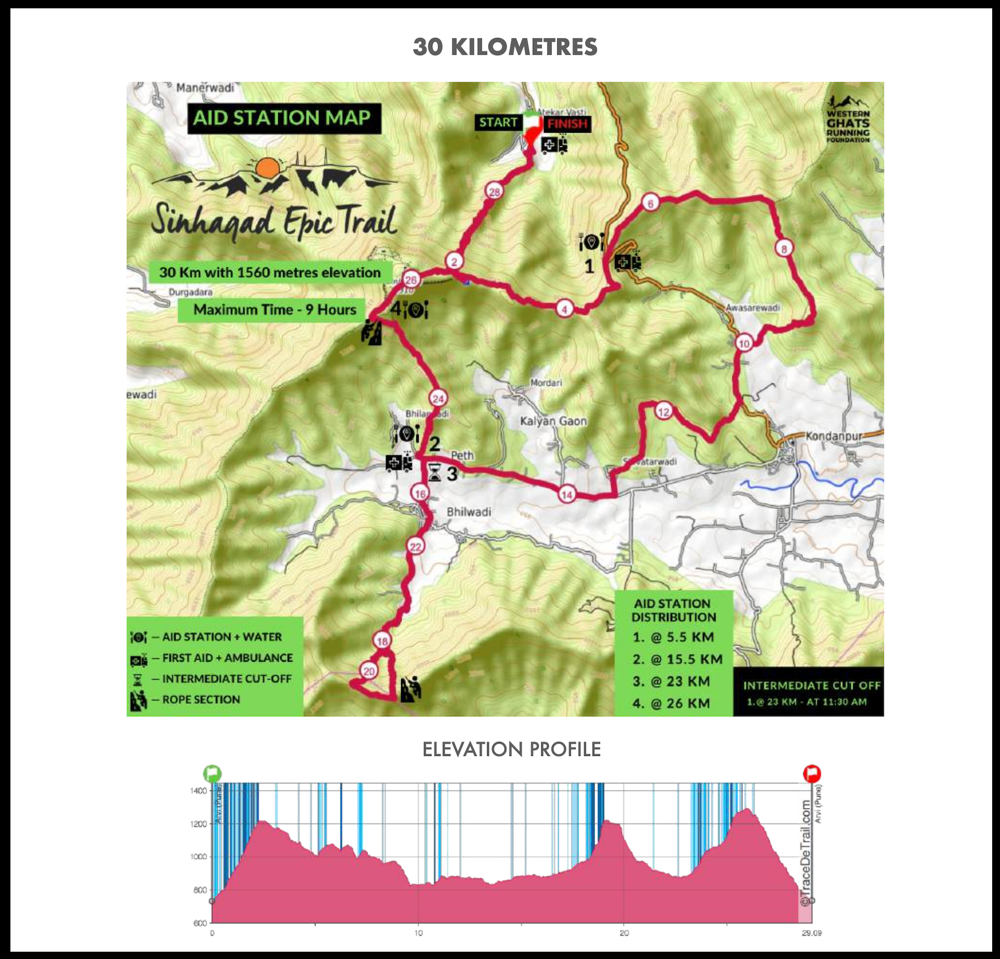
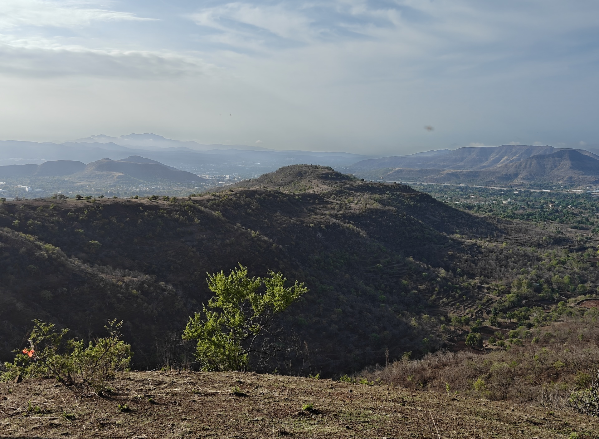
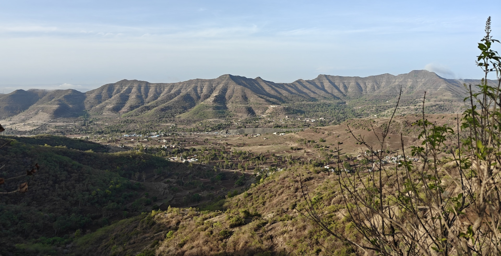
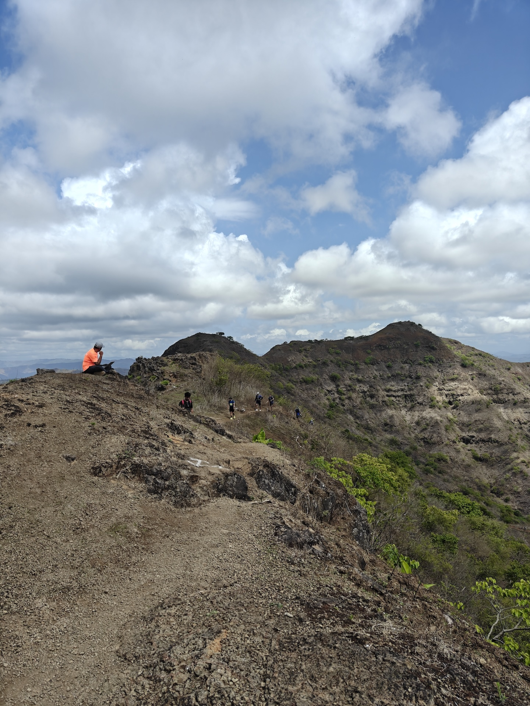
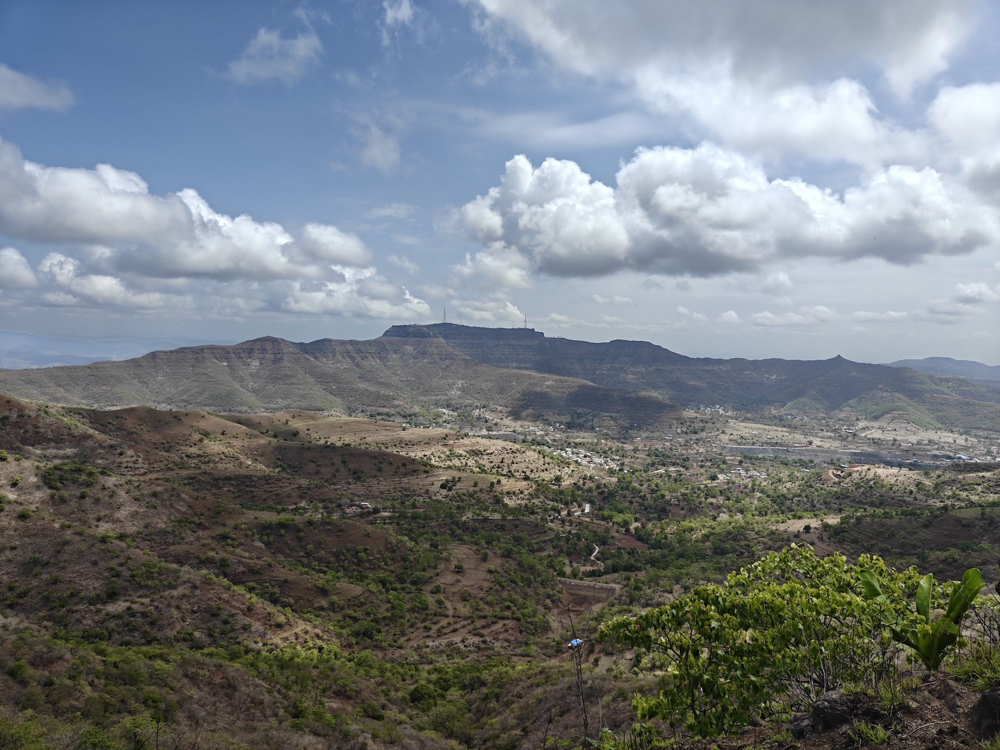
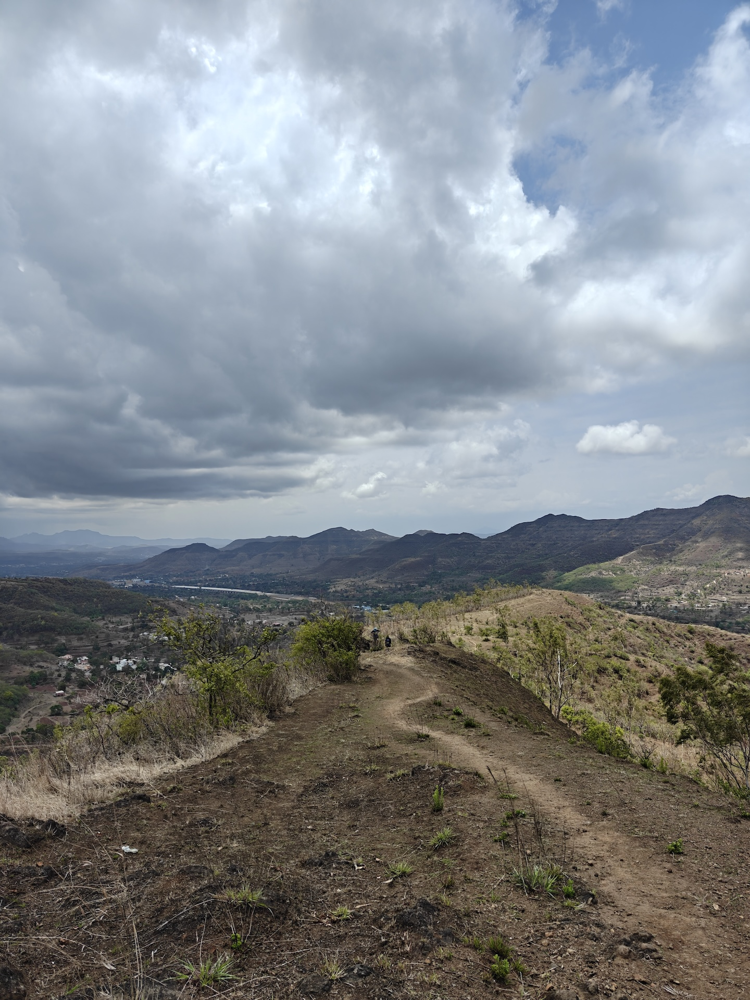
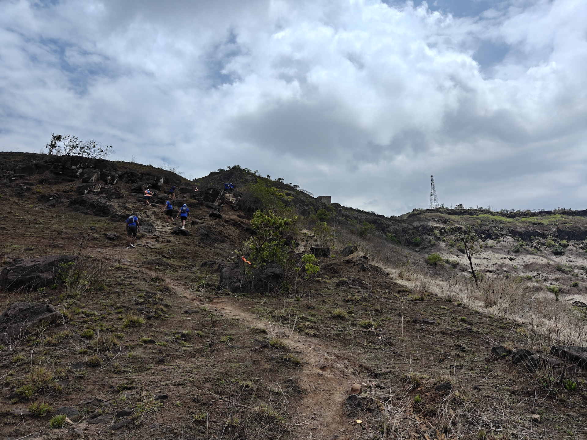
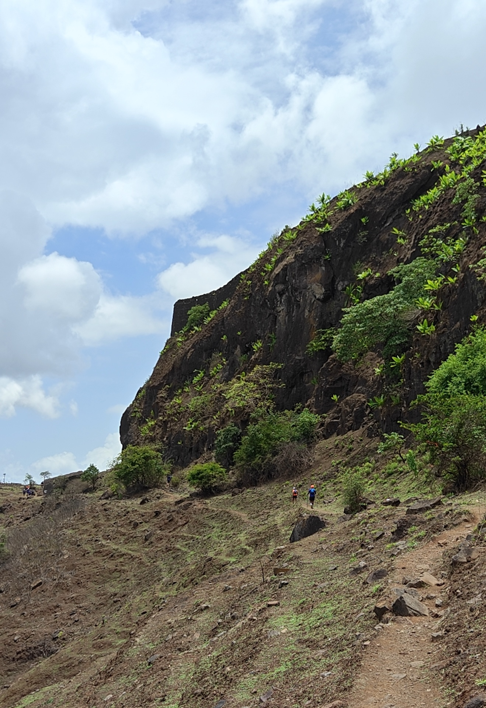
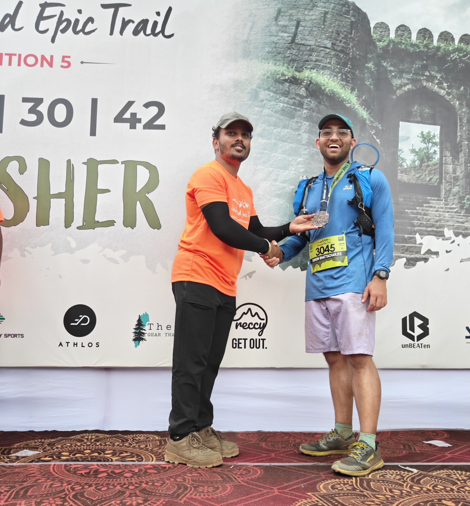
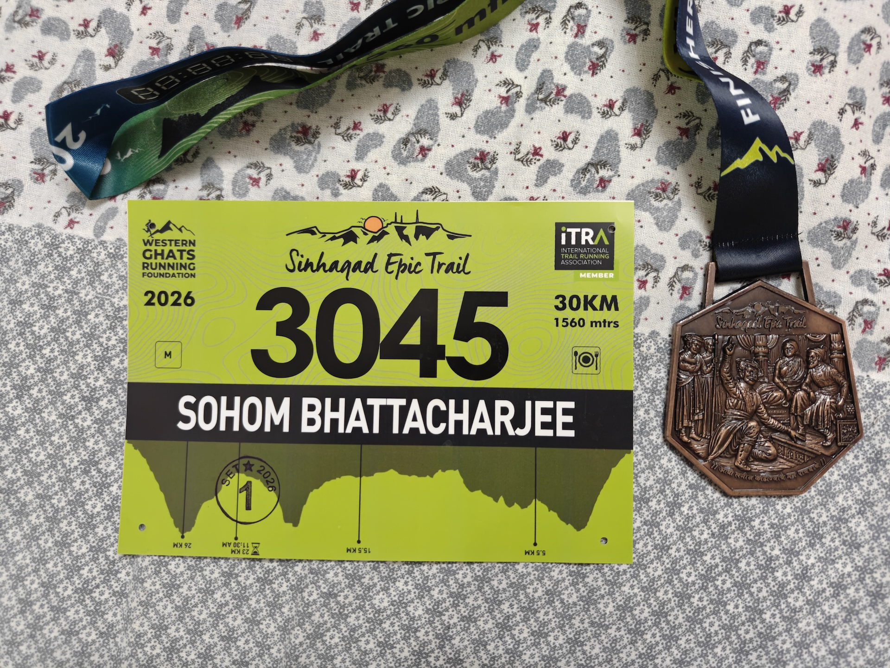

Sinhagad Epic Trail 2026¶
I ran the Sinhagad Epic Trail - 30K on June 27th. This is the second trail run under my name. My First Trail Run was the datum, which was quite decent in my opinion (as far as datums go).
The experience at Sinhagad Epic Trail was markedly different.
I signed up for this race back in April without thinking too much about it. I really wanted to run in the Sahyadris and wanted to test myself against another 30K run.
The Coffee Trails 3.0 saw about 150 people running last year, while this race had over 1,000 people who signed up, and I'm guessing a similar number ran the race.
Some housekeeping first.
These are links to my Strava activities (I will explain the two parts later):
- Part 1
- Part 2
This is the route map. You can download or view the actual one on the website of the Western Ghats Running Foundation.

The race!!!!¶
The race started early in the morning and had four major sections: the first hill, the flat-ish section in the middle, the second hill and the final hill.
Weather conditions were brutal. We were expecting clouds, rain and mud; instead, we were greeted by a cloudless sky, bright sunshine and dusty trails.
The first hill (Sinhagad)¶
The first major hill was quite fun. I was fresh and felt that this section went very smoothly. This was the common route for the 11K and 20K races; hence, we had a lot of runners with us. It felt like a party. This was in the early hours, so the heat and the sun didn't affect me much. I was able to reach the top without much distress. After reaching Sinhagad Top, we took the road and ran for a bit before reaching the aid station. The descent came after this. I tripped and fell, leaving a shallow laceration on my left calf. It is OK. For some reason, I was not consuming my water/electrolyte mix and was conserving it (this was a bad idea).

I believe this was taken somewhere here.
A view from the top
The flat(-ish) section¶
The next section was mostly flat, or rather, it didn't have any major climbs. I assumed this part would be easier and that I would be able to gain some time. However, the reality was different. Since my road-running skills are not top-notch, I was not able to run this section in its entirety. It was some walking and some running. Moreover, this section was completely exposed, with the bright sun above us. There was a station serving Red Bull to the runners. I grabbed one without sugar :(. I could have really, really used some sugar at this point. The caffeine in the Red Bull contributed to the cramping that followed. The second and third aid stations were at the same location. Reaching the second aid station within the time frame that I had set for myself was a milestone. I reached it in about three hours. This was supposed to give me enough time to climb the second hill and return in 2 hours and 18 minutes. The intermediate cut-off was 5 hours and 30 minutes at the third aid station.
The CLIMB¶
The second hill was the most brutal section in the entire race. As soon as I started climbing, I started feeling the weather and the elevation. Some sections of the hill were very exposed, and the lack of vegetation didn't offer us any protection from the sun. We climbed on, barely able to run. A bunch of people sat down, took breaks and then continued. The trail was not too isolated, as this hill has a popular temple at the top. I saw a bunch of runners stop and DNF in this section. I had a couple of fellow runners to keep me company. I was glad for their company. I was so tired on this section that I looked for a wooden stick and started using one for support. I should have carried my trekking poles (lesson learnt!).
Some runners who were descending kept telling us that arrangements had been made for a cold shower at the top. I initially brushed this aside, assuming that they were talking about a water station or something. However, I was pleasantly surprised when I reached the top. Close to the top, there is a ridge section, that offered incredible views on both sides.
The person you see in orange sitting on the rocks is a volunteer. He was noting down the runners' bib numbers.

At the top of this hill is a famous temple called the Mengjai Mata Mandir; thus, this hill is also known as Mengjai Hill.
I aimed to reach the top with about 45 minutes to return to the third aid station and cut-off point; however, I only made it to the top with about 35 minutes to spare. At the top, we had a rock-cut water cistern that was being used to pour cold water on all the runners who wanted to take the cold plunge. Our bibs were also stamped, indicating that we had indeed climbed to the checkpoint. I filled up my water bottle and took a bucketful on my head. It felt like all of my tiredness was washed away. Before starting downhill, I took some time to look around (what is the point of such a tiring climb otherwise!!!). You can see Sinhagad from the top of this hill. Those two towers sticking out of the hill are a distinctive feature of Sinhagad.

A view of Sinhagad from the top.
I started running back down soon, but this time with lots of energy. It was as if my fatigue had been washed away!!
I had never imagined that temperature could make such a difference to performance. I am decent at running downhill. I have the confidence and the footwork to just run downhill; however, I get gassed out too soon. My low aerobic capacity strikes again!!! (I need to do more polarized training.) At the end of this section was the intermediate cut-off point. By the way, my clothes were dry by the time I reached it. I also cramped during this stage, in my quads and calves.
I reached it around 11:40, which was officially five minutes late. I assumed that I wouldn't be allowed to continue, and I was mentally prepared to quit and DNF (Did Not Finish) the race. I even stopped my watch as I reached the spot (this is why my Strava activity is in two parts). However, I was surprised to see that the team was letting others continue with the race. They asked me if I wanted to continue. I was about to quit when I saw a friend run past me. She was covered in mud, and watching her run gave me immense hope. Then some other runners who were also resting there said that we would cover the rest of the distance together. The last section suddenly turned into a group project :P.
The final climb¶
We started after hydrating and applying tons of diclofenac gel and other pain-relief sprays to our legs. During this stretch, I also experienced hallucinations, which was interesting. I ended up applying diclofenac under my eyes, hoping that the scent would keep my eyes open. A fellow runner gave me an energy gel, which was an interesting experience. We kept walking and pushing each other throughout the last section. The climb was not too bad. It was a walk on a gradual slope, followed by some steep, rocky climbing.

This is the view looking back towards the 3rd aid-station while climbing to Sinhagad.
This is from the same spot, but looking up!!
We were climbing Sinhagad from the other side. The mountain looked majestic. I took some videos and photos of the climb. By this time, my friends had started calling me. They were coming to pick me up after the run. Then we reached the top of the hill, and we had a bit of contouring to do before climbing a vertical-ish rocky area to the actual Sinhagad fort.

The contour section.
This section felt more technical, as we had some extremely exposed rocky terrain (we had a small section with a rope attached). It was great fun. Things became joyful once we topped the hill and reached Sinhagad Top. Atop the fort, we were welcomed with puran poli and tea. Hats off to the entire team who managed to pull this off!!!
After consuming some refreshments, I started my hike down. This was mostly uneventful and largely fun. Seeing the end of the race gave me a LOT of joy. I was also very much dead by the end of this.
I completed the race in 7 hours and 53 mins. :)

Me!!!
The Bib and the Medal
It started raining about 15 minutes after I completed my race, and soon it was pouring heavily. I missed running the race in the rain, and I am sad about it. :) I ended up showering in the rain and relaxing. The lunch was amazing. A hearty meal after a brutal run is always welcome.
My friends arrived soon and we headed home.
The aftermath¶
I got a bad stomach after the run. This was a classic post-run-black-stool situation. Apparently your intestines can bleed internally during a long run and when that blood passes through the system, it turns black. Its ax common thing, but also it indicates poor hudration and nutrition. I need to train for running in the heat and with less water.
I am a trail-runner with ITRA index of 284. Check out my profile.
Why do this?¶
Running and endurance sport are things that I find myself drawn to. There is something profound about running through these vast landscapes. The feeling of being incredibly insignificant when standing at the foot of a large mountain is something that I crave. There is a sense of peace that comes only when you acknowledge your insignificance in this world.
It is timely grounding, without which delusions of grandeur can cause catastrophic damage. I am a very small entity; thus, ALL of my problems are also smaller. If I can overcome this, I can overcome those. The only way out of rock bottom is up, and that is a good thing.
There is also an aspect of overcoming a challenge and doing hard things. There is something beautiful about testing yourself against a worthy opponent. As humans, we like to believe that we are capable of effecting change in this world, and one way of doing this is by overcoming a difficult challenge. This is the dragon you have to slay; this is your Annapurna. 1
For me, endurance and mountains represent this tug between the idea of insignificance that comes from standing next to towering hills and the feeling of accomplishment that comes after overcoming a challenge of my own choosing.
Sir Edmund Hillary put it nicely.
It is not the mountain we conquer but ourselves.
What next?¶
I want to run the Malnad Ultra 30 with a stronger finish.
I want to complete the South India Trail Grail over the next two seasons, starting next year.
I want to run The Summit Slam in 2027 or 2028. I feel I need more training to hit these goals.
I want to run the Hell Race, specifically the ones in Himachal and West Bengal (The Buddha Trails).
Of course, I will need to train for these goals, and I will have to commit to them as they are multi-year goals. :)
Learnings and Training¶
My training for this race was not as good or as focused as I would have liked. My aerobic capacity and hill running need work, although my joints seem OK. Here is what I plan to focus on:
- more speed work, so that I can sustain a higher heart rate for longer periods of time
- more focus on building an aerobic base for long, slow distances at a moderate speed
- more hill work (uphill and downhill) for greater confidence and muscle conditioning
- more practice eating and hydrating during runs so that I don't throw up if I eat something during a run
- more training in the heat and with less hydration
I want to consistently hit 30 km a week of running volume over the next couple of weeks.
I teamed up with a friend (hello!!!) and we will start training under a trail-running coach in Bengaluru.